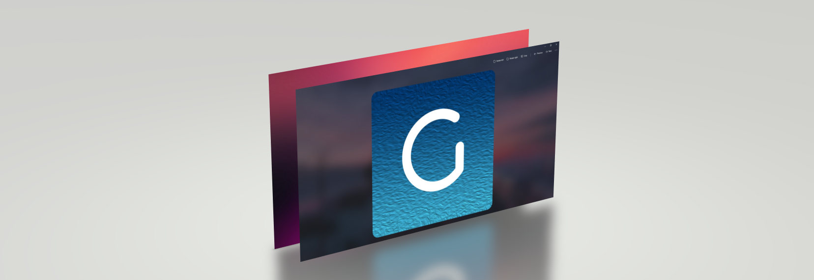
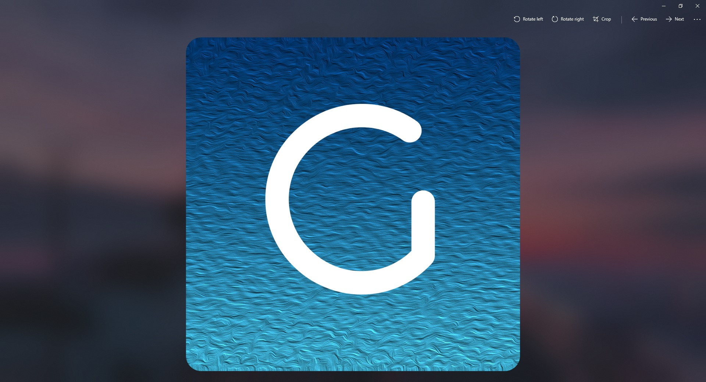

Gogh
A Photo Viewer with Fluent Design
A modern photos app for Windows. Gogh is a photo viewer tool for Windows that aims to provide a modern UI for viewing and editing images. Gogh offers tools to help facilitate the creation of image datasets for data science applications. Soon to be available on the Microsoft Store.
I started Gogh as a way to have both a functional yet lightweight and modern UI for a photos app, with apps like IrfanView paving the way. Lots of changes to the Windows App landscape since then. UWP as a platform has been effectively dropped by Microsoft. WinUI/WinAppSDK is the successor and has been getting steady updates since I last worked on Gogh. The official Windows Photos app has recieved an overhaul as well, sunsetting the old one to a "Photos Legacy" app.
Overall love the UI direction it has gone, mostly due to advances in WinUI, but the presence of ads for Microsoft services is disappointing. Gogh will get the updated WinUI look and hope to keep things more minimal. Goal is to still support Windows 10 users, despite it sunsetting Summer 2024.
Oh yeah 'aCropalypse' vulnerability happened a while back, wondering how that extends to Gogh as well since it relies on some similar core MS libaries.
Lastly, I never released an installable binary for yall, ops :/ Need to make one to publish to MS Store, so that will be on the priority list. You'll hear from me again soon!
FAQs
- What is Fluent Design?
Microsoft Fluent Design is an open source design language that provides a unified and modern look and feel across multiple mediums and devices. It is based on five core principles: Light, Depth, Motion, Material, and Scale, and focuses on creating a seamless user experience with minimal user input. It also emphasizes minimalism and responsiveness by utilizing material design elements and motion to create an immersive and interactive experience.
- Why create Gogh?
I initially sought out a tool to quickly view and organize my image datasets. I found Windows 10 built-in Photos app to be frustratingly sluggish, bloated, and lacked modern alternatives. Solutions such as ImageGlass and IrfanView existed, but lacked the data centric features I needed, and other services such as Adobe Lightroom were not free, thus Gogh was created.